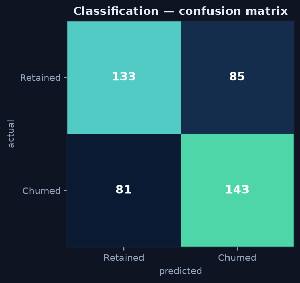
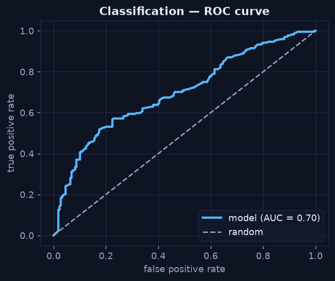

Classification — Predicting a Label
Chapter 4 — Judge It the Right Way
Classification predicts a category — here, whether a customer will churn. The modelling is easy; the discipline is in evaluation, because the obvious metric (accuracy) is also the most misleading.
Honesty note: the synthetic retail dataset has no real churn outcome. For this chapter we construct a churn label from a latent propensity (customers with high discounts and low engagement are more likely to churn) plus noise, purely to illustrate the classification workflow. The metrics below are real — computed on a held-out test set — but the label is synthetic by design.
Fit the Classifier
Python · scikit-learn
from sklearn.ensemble import RandomForestClassifier
X, y = cust[features], cust["churn"]
X_train, X_test, y_train, y_test = train_test_split(
X, y, test_size=0.25, random_state=42, stratify=y)
clf = RandomForestClassifier(n_estimators=250, random_state=42).fit(X_train, y_train)
proba = clf.predict_proba(X_test)[:, 1] # churn probability per customerWhy Accuracy Lies
If only 3% of customers churn, a model that predicts "nobody churns" is 97% accurate and completely useless. Accuracy rewards predicting the majority class. The fix is to look at the confusion matrix — the full breakdown of right and wrong on both classes.

The confusion matrix shows performance on both classes at once — the diagonal is correct, the off-diagonal is the errors that accuracy alone would hide.
Precision, Recall, and the Trade-off
From the confusion matrix come the two metrics that actually matter:
- Precision = of the customers we flagged as churners, how many really were. Here ≈ 0.63.
- Recall = of the customers who actually churned, how many we caught. Here ≈ 0.64.
Which one matters more depends on the cost of each error. A cheap retention email rewards recall (catch everyone at risk); an expensive intervention rewards precision (don't waste it on false alarms). You tune the trade-off by moving the probability threshold.
ROC and AUC — Performance Across All Thresholds
The ROC curve plots true-positive rate against false-positive rate as the threshold sweeps from 0 to 1, and the area under it (AUC) summarizes the model in one number: 0.5 is random, 1.0 is perfect. This model scores AUC ≈ 0.70 — a modest but genuine lift over guessing, which is an honest result for a behavioural churn model.

The curve bows above the random diagonal (AUC ≈ 0.70) — the model ranks churners ahead of non-churners better than chance, but it is no oracle.
Don't Ship a Metric You Can't Explain
A model is a decision tool, not a trophy. If you can't say in one sentence what it predicts, how good it is in business terms, and where it fails, it isn't ready. An AUC of 0.70 with recall of 0.64 is shippable for prioritizing retention spend — as long as everyone knows it will miss about a third of churners and raise some false alarms. That honesty is the bridge into prescriptive analytics, where a prediction becomes a recommended action.
That completes the Predictive Analytics mini-series. Continue with Prescriptive Analytics — What Should We Do? →